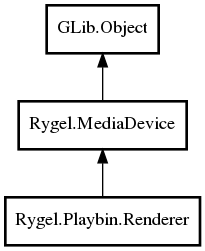

MediaDevice
Renderer
Object Hierarchy:
Description:
public class Renderer :
A UPnP renderer that uses a GStreamer Playbin2 element.
Using GstPlayBin2 as a model, it reflects any changes done externally, such as changing the currently played URI, volume, pause/play etc., to UPnP.
Likewise, the playbin can be modified externally using UPnP.
You can retrieve the GstPlayBin2 by calling rygel_playbin_player_get_playbin() on the default player - see rygel_playbin_player_get_default(). You should then set the "video-sink" and "audio-sink" properties of the playbin.
Call rygel_media_device_add_interface() on the Renderer to allow it to be controlled by a control point and to retrieve data streams via that network interface.
See the standalone-renderer.c example.
Namespace: Rygel.Playbin
Package: librygel-renderer
Content:
Creation methods:
Inherited Members:
All known members inherited from class Rygel.MediaDevice

All known members inherited from class GLib.Object